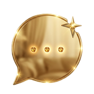
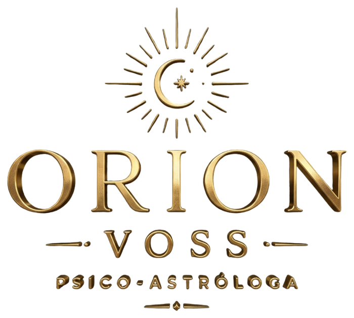
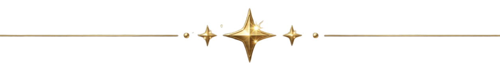
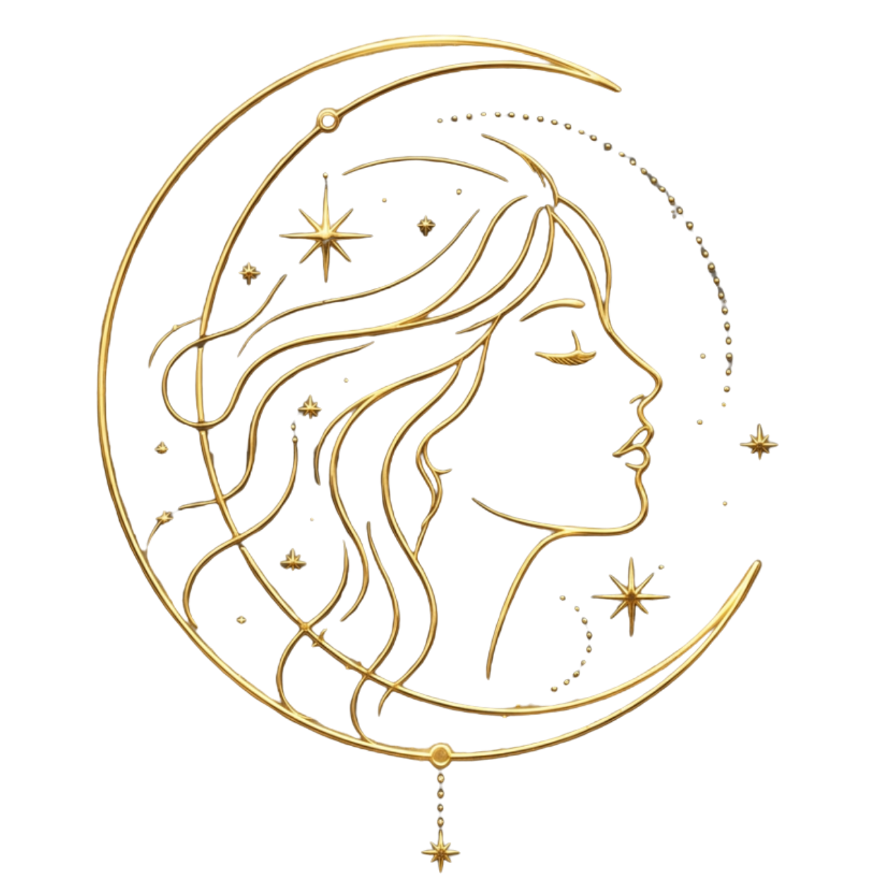
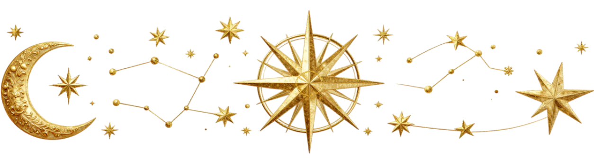
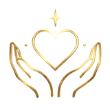
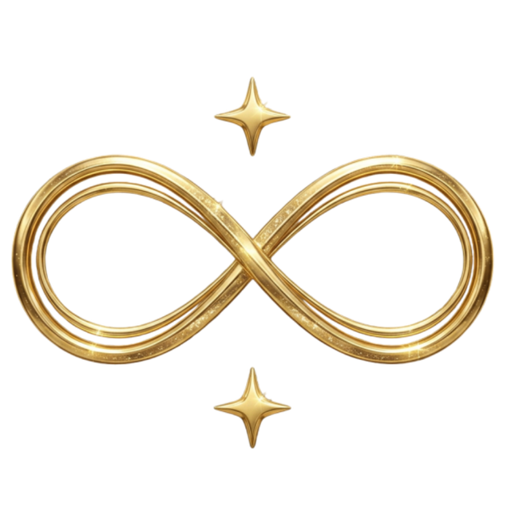
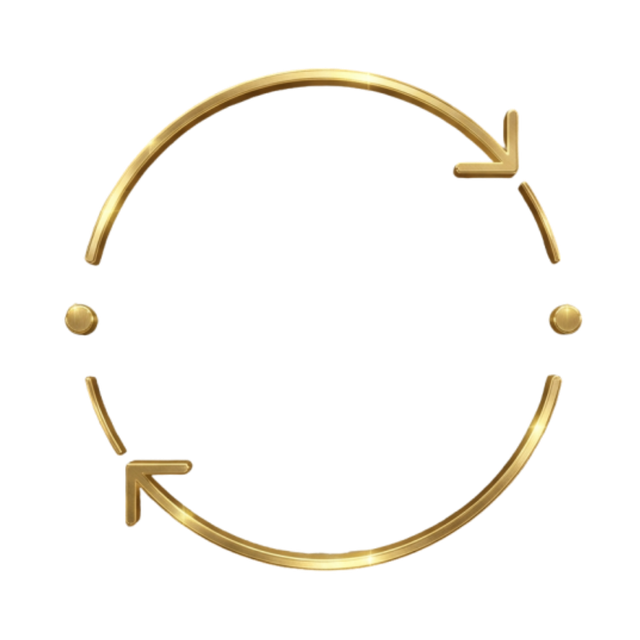
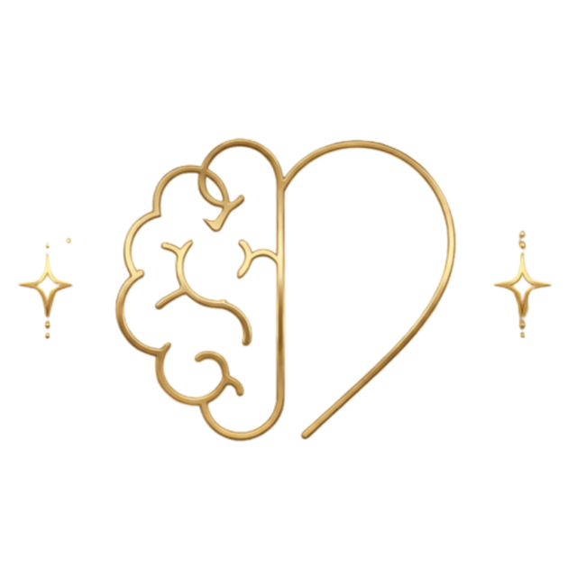

Você envia uma mensagem
Começa pelo WhatsApp, do seu jeito.

Converse com a Orion: uma psico-astróloga que escuta você antes de falar do céu. Ela parte da sua base — Sol, Lua, Ascendente — pra te ajudar a enxergar seus padrões e quem você está se tornando. Acompanhamento de verdade, no seu WhatsApp, no seu ritmo.
Começar minha jornadaAs primeiras conversas são por minha conta.

O que é psico-astrologia
A psique vem primeiro.
O mapa mostra tendências, arquétipos e padrões que influenciam suas escolhas.
Você continua escrevendo sua história.


Onde a psique encontra os astros, a ciência encontra a alma e a ferida encontra o dom.
Como funciona

Começa pelo WhatsApp, do seu jeito.
Ela acolhe o que você traz e parte da sua base: Sol · Lua · Ascendente.

No seu tempo, com memória. Sem precisar começar do zero.
Sobre a Orion
A astrologia é a linguagem que ajuda a psique a se compreender.
Os astros inclinam, mas não determinam. Você tem o livre-arbítrio — e eu estou aqui para te ajudar a exercê-lo com consciência e coragem.
Diferenciais do acompanhamento



O que dizem sobre a Orion
“Foi a primeira vez que me senti verdadeiramente compreendida. Não é sobre previsões, é sobre entendimento profundo.”
“O acompanhamento com memória faz toda a diferença. Ela lembra tudo e conecta os pontos de um jeito que só faz sentido.”
“Meu mapa fez sentido de verdade quando veio acompanhado da escuta e da psicologia. Transformador.”
Merece presença, escuta e profundidade.
Começar minha jornadaAs primeiras conversas são por minha conta.